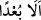

Allah’tan alıkoyan mal ve çocuk senin için felâket getirir.” Ancak dünyanın Allah’a
yaklaştıran, O’na ibâdete yardım eden yönü ise herkes tarafından övülmüş, her insan
tarafından sevilmiştir. Böyle bir şey ise sövüp sayılacak bir şey değil aksine
arzulanacak, sevilecek bir şeydir. Yukarıdaki hadiste yer alan “Ancak Allah’ı anmak
(zikir), zikre devam edenler, âlim ve ilim öğrenen hâriç” ifadesi buna işâret etmektedir.
“O, mü’min için gayet güzel bir binittir/araçtır…” ifadesi de bunu açıkça
göstermektedir. Böylece bu iki hadis arasındaki çelişki ortadan kalkmış olur.
Bilesin ki lânetin hakîkati, ilâhî huzûrdan dünya şehvetleri peşine düşmeye, onlara
ulaşmak için yorulmaya, onları kaybettiği için ah u vâh etmeye koyulmaktır. İşte bu
dünyevî lânettir. Kıyamet gününün lânetine gelince bu, Allah’tan uzaklaşıp O’ndan
mahrum kalmak, hüsrana uğramak ve ateş azâbıdır. Bu bakımdan nefis, kalb Hûd’unun
nasihatını kabul etmeyip kalbin nûrânî parıltılarından, rûhânî tamahlarından ve rabbânî
şâhidlerinden ibâret olan kalıcı, dinî meşreblerini terk ettiği; şehvetler, hayvânî
lezzetler, insanların övgüsü ve onların yanında mevki kazanmak ve benzerlerinden
ibâret bulunan fânî dünya lezzetlerine yöneldiği zaman hakkında: “=uzak olsun”
hükmü gerçekleşmiş olur. Bu nefsin kovulması, ayrılması, mahrum bırakılması ve hasret
çekmesi demektir. Allah Teâlâ, bizi ve sizi nefs-i emmârenin tuzaklarından korusun.
Ömrümüzün son demine ve ecelimiz gelip çatana kadar iyi hâl üzere bulunmakla
şereflendirsin.
[141]. Bk. Terğib, II, 317-318
[142]. İbn Mâce, Ticârât, 6; Dârimî, Büyü, 12
[143]. Müslim, Edahi, 45; Nesâî, Dahâyâ, 34; Müsned, I, 108, 118, 153
[144]. Müslim, Müsâkât, 106
[145]. Ebû Dâvud, Akdiye, 4; Tirmizî, Ahkam 9; İbn Mâce, Ahkam 2; Müsned, II,
164
[146]. Ebû Dâvud, Eşribe 2; İbn Mâce, Eşribe 6; Müsned, II, 97
[147]. Deylemî, Firdevs, hadis no: 5454
[148]. Tirmizî, Zühd, 14; İbn Mâce, Zühd, 3; Dârimî, Mükaddime, 32
[149]. Deylemî, hadis no: 7288